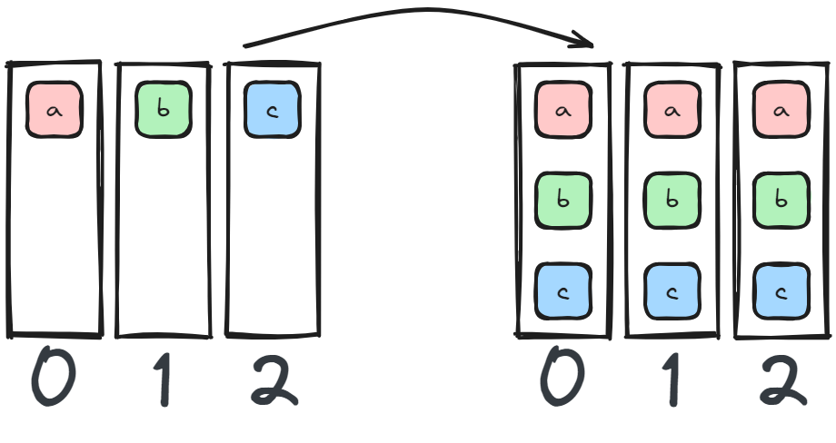
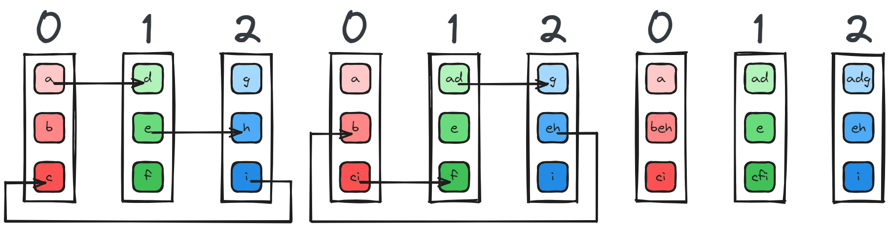
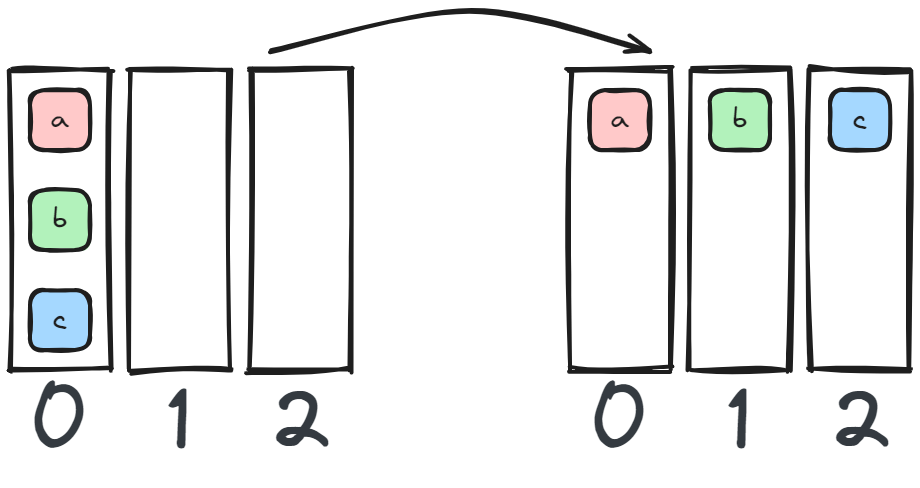

This is a reference page I made of collective communications in multiprocessing systems while working on NuMPItron. I previously made a blog post about tensor parallel training in NuMPItron here. This article is in some sense a work in progress and I will keep updating it as I read more papers.
There is a general guide to performant versions of each comm here, although it is very specific for MPI and the same does not have to hold for GPUs. Gloo, created by Meta, also has a decent reference guide.
1 AllGather
NCCL | PyTorch Docs | NuMPItron

AllGather is often used to combine a sharded tensor on all devices. As such, any sharded model (tensor/pipeline parallel) could be AllGathered on all devices in full.
It can be found in ZeRO, where parameters are AllGathered during the forward and backward pass per layer.
When using an asynchronous form of Tensor Parallel, AllGather is used after a column parallel layer to gather the weights (gradients) at the end of the forward (backward) pass.
AllGather is also found in Megatron-LM style sequence Parallel, where we gather the data from the LayerNorm & Dropout layers before forward it through the Attention and MLP layers.
Note: the behavior of the NuMPItron implementation of AllGather is similar to all_gather_into_tensor in PyTorch.
2 AllReduce
NCLL | PyTorch Docs | NuMPItron
Perform a reduction (op={SUM,MAX,...}) and broadcast to all devices. PyTorch has quite a large amount of reductions available.
AllReduce can be found in distributed data parallel, where you sum the gradients for each weight over devices in the backward pass.
Allreduce is also found in tensor parallel. Here we sum each forward and backward pass of the MLP and Attention layers (and do some reductions in the embedding and loss calculation too, see my post on tensor parallel).
2.1 Ring AllReduce
Horovod, ye old distributed training framework for TensorFlow built by Uber back in the day, was too slow. Specifically, the AllReduce implementation was too slow. Originally, the algorithm implementation performed something like a Reduce - Section 7 and Broadcast - Section 4 operation on the data. A single/root device would collect the data, perform the reduction, and send it to all other devices. The issue is that it creates a bandwidth bottleneck: increase the number of devices and the incoming root will not be able to receive and send data fast enough.
An engineer working at Baidu Research figured out an improvement based on a technique in high performance computing, a ring message passing scheme (the same one described in the paper above). If you picture the devices in a topological ring, each device receives data from its left neighbour and sends data to its right neighbour. In the figure below1 we have three devices and three chunks of data. The improved algorithm starts with a series of ReduceScatter - Section 8 operations where each device sends one of its chunk to its neighbor untill each device has one complete chunk:
1 I’ve adapted and simplified the figure below from the original blog post (andrew.gibiansky.com).

With each device having a complete chunk of the data, each device now sends its neighbor the complete chunk it has untill each device has the data in full:
This implementation makes scaling distributed data parallel much more efficient, and was probably somewhat of a milestone in distributed training frameworks.
3 All to All
NCLL | PyTorch Docs | NuMPItron

All to All reminds me of a matrix transposition, we essentially scatter and gather the data based on the device rank.
It is found in DeepSpeed style sequence parallel called Ulysses, but I have not read the paper in depth yet.
4 Broadcast
NCLL | PyTorch Docs | NuMPItron
A single device sends data to all other devices. In data parallel you would scatter the data to each device, but in tensor parallel you want each device to work on the same set of data, so you could broadcast the same batch of data to all tensor parallel ranks.
5 Gather
NCLL | PyTorch Docs | NuMPItron
Gather data from all devices to a single device.
6 Receive / Send
NCLL | PyTorch Docs | NuMPItron
A device sends or receives data from another rank. In some sense, most of the collective communications are using send / receive.
In Pipeline Parallel each pipeline layer sends a batch of data to the next layer in the forward pass, and sends the gradients in the backwards pass to the previous layer.
7 Reduce
NCLL | PyTorch Docs | NuMPItron
Perform a reduction (op={SUM,MAX,...}) and send to a single device (dst=RANK).
8 ReduceScatter
NCLL | PyTorch Docs | NuMPItron
ReduceScatter is found in Megatron-LM style Sequence Parallel. LayerNorm and Dropout are independent operations on the sequence dim. One option here is to simply add a Scatter - Section 9 and Gather - Section 5 operations before and after these two layers, but that would mean we have more overhead if combined with tensor parallel (which is the goal). Instead, we can perform a ReduceScatter where we would originally AllReduce for tensor parallel. Where would normally perform the identity operation in tensor parallel, we instead Gather.
PyTorch Fully Sharded Data Parallel used ReduceScatter to sum the gradients in the backwards pass but to ensure that each device only keeps a shard of the gradients. The same can be used in ZeRO.
9 Scatter
NCLL | PyTorch Docs | NuMPItron

Also known as one-to-all, an operation that shards the data block on a chosen device evenly amongst all other devices in the same group.
Scatter is used in tensor parallel to initially shard the weights of the embedding, MLP, and attention weights across devices.
Scatter is also used in data parallel when we have to shard the batch across devices.